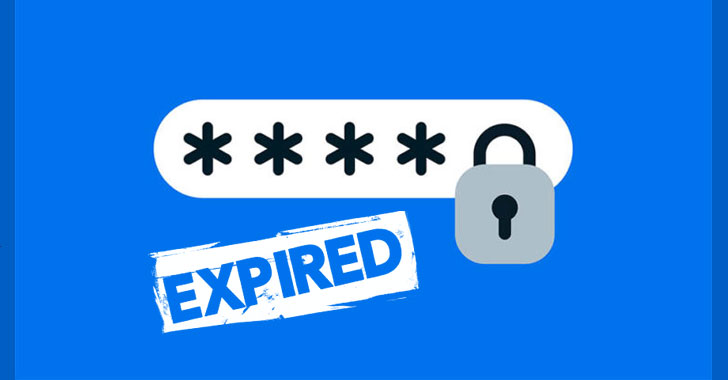

Full-disk encryption
FDE — e.g., BitLockerEncrypts the entire storage drive to protect data-at-rest from unauthorized physical extraction.
2.7
Encryption, passwords, account hardening, and endpoint controls that protect data and reduce attack surface.
Protecting stored data on drives, files, and removable media.
Encrypts the entire storage drive to protect data-at-rest from unauthorized physical extraction.

Encrypts specific individual files and folders for targeted data protection.
Protects external media like USB flash drives from unauthorized access.

Secure key copies must be maintained (often integrated into Active Directory) to ensure data recovery options remain available.
Policy requirements that make credentials harder to guess or reuse.
Enforce strong passwords with a minimum of 8 characters — or use multi-word passphrases.

Combine uppercase letters, lowercase letters, numbers, and special characters while avoiding single or obvious words to maximize entropy.
Enforce unique passwords across accounts and utilize password history settings to prevent reusing old credentials.

Set age and expiration policies (e.g., 30, 60, or 90 days; 15 days or weekly for critical systems) so passwords automatically invalidate after a set duration.
Firmware-level protection before the operating system loads.

Prevents unauthorized users from modifying low-level system settings or BIOS/UEFI configurations.

Requires a valid password before the operating system is permitted to boot.
Day-to-day habits that protect workstations and sensitive information.

Require passwords to unlock screensavers that automatically engage after defined idle timeouts.

Secure workstations immediately when walking away to prevent unauthorized physical access.

Protect laptops and physical assets using cable locks and secure mounting.

Position monitors away from hallways or windows, use privacy filters, remain aware of surroundings, and refrain from writing credentials on sticky notes.

Encrypt and store unique credentials across all accounts in a single database, with support for multi-factor tokens and centralized enterprise recovery.
Policies and controls that limit who can access what, when, and for how long.

Follow the principle of least privilege, audit user rights, and assign permissions to groups rather than managing per-user rights directly.

Limit user authentication strictly to active working hours and block after-hours activity.
Remove or disable built-in Guest, root, or unnecessary default system accounts to reduce potential entry points.
Configure account lockout thresholds to lock accounts or reboot systems after repeated failed authentication attempts, blocking online brute-force attacks.

Enforce automatic desktop locking after designated periods of user inactivity.

Automatically disable accounts assigned to temporary workers, vendors, or contractors on a predetermined date.
Disrupt automated attacks that target stock credentials.

Change stock administrator accounts (e.g., admin) to unique names.
Replace default credentials immediately across all OS installations and network devices to disrupt automated brute-force scripts.
Stop removable media from automatically executing malicious code.

Disable autorun.inf execution via the system registry on supported Windows environments.

Configure device behavior via Settings → Bluetooth & devices → AutoPlay (e.g., setting default actions to “Take no action”) to prevent automatic execution of media content.
Reduce the attack surface by turning off what you don’t need.

Audit background services installed by the OS or third-party applications and disable any unneeded services to close open entry points and protect against external breaches.